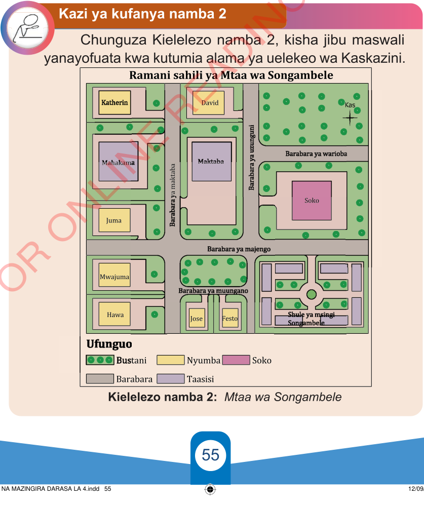

Kazi ya kufanya namba 2
Chunguza Kielelezo namba 2, kisha jibu maswali yanayofuata kwa kutumia alama ya uelekeo wa Kaskazini.

Ramani sahili ya Mtaa wa Songambele
Katherin
David
Kas
Mahakama
Maktaba
Soko
Juma
Mwajuma
Hawa
Jose
Festo
Shule ya msingi Songambele
Barabara ya maktaba
Barabara ya uzunguni
Barabara ya warioba
Barabara ya majengo
Barabara ya muungano
Ufunguo
Bustani
Nyumba
Soko
Barabara
Taasisi